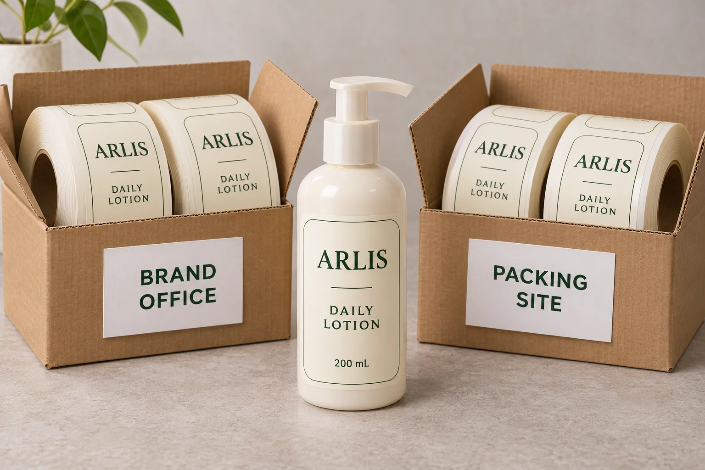
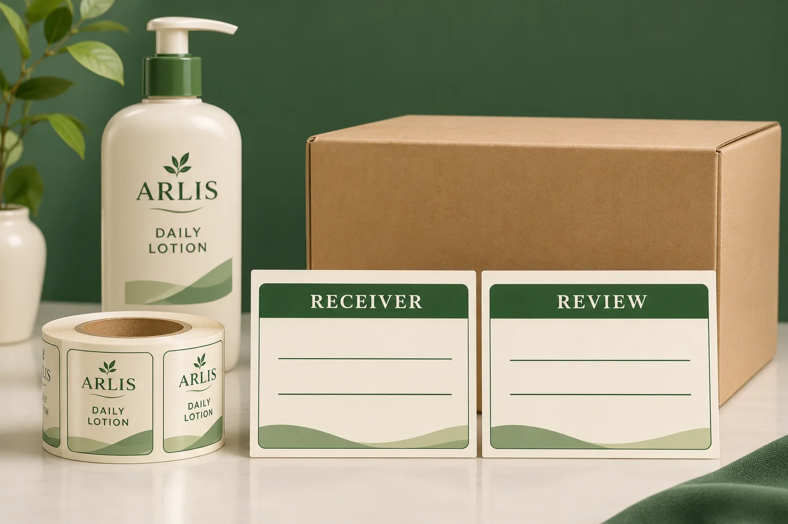

Send cosmetic labels directly to the co-packer when that site has accepted the supplied format, can identify and review the delivery, and has a named person who can hold or release the stock. Route them through the brand first when the brand needs to examine the actual delivery itself and the schedule allows a second shipment. Choose the receiver around the review still needed before filling.
These routes can use the same printer and the same labels. What changes is where the first carton arrives, who sees a problem first and how the labels reach the filling line. Decide those points before the supplier books the delivery.

Give the first receiver a job it can actually perform
Ask what the receiving site can check when a label shipment arrives. It may confirm carton identity and count, compare a label against an approved artwork reference, or carry out an agreed incoming review. Find out which of those tasks it has accepted for your order. A courier signature only records delivery to someone at the site.
Give that person the purchase-order reference, expected artwork revisions and component quantities before dispatch. Agree who receives photographs or a discrepancy report and who can authorize the next step. Use the incoming inspection guide when the quality owner needs to define the actual review method.
For an applicator run, get the co-packer’s roll requirements accepted before printing. Delivery to a factory is useful only if the supplied rolls can enter its agreed process. If fit or appearance is still being evaluated, identify that open decision and ask whether a representative sample should go ahead of the full order.
Compare the two physical routes
Printer to co-packer. This may fit a repeat order whose references are stable and whose receiving team can perform the agreed checks. Ask the factory for its receiving contact, job reference, intake requirements and latest useful receipt date. The brand still needs a way to see the results and approve an exception when required.
A label supplier’s service can support that arrangement. For example, PackOS’s beauty-label page describes delivery to a co-packer and asks for the applicator’s roll specifications. Treat it as a specific supplier’s offer. Ask your chosen printer and receiver what they can confirm for your shipment.
Printer to brand, then to co-packer. This may fit a job where the brand needs its own physical review of the delivered appearance or assortment. Include time for receiving, that review, any query and the onward shipment. Ask who will repack the rolls and keep their identification intact. Obtain a new transport proposal if the carton arrangement changes.
If the brand only needs an identified physical reference, ask whether sending that reference separately would meet its need. The factory’s delivery still requires the agreed receiving decision. Clarify what each sample or record represents so an office swatch is never mistaken for an inspection of every carton sent elsewhere.

Complete a routing record before confirming the address
Use one record for the intended filling job. Ask the brand, printer and receiving site to acknowledge their own entries.
- Expected supply
List the order, artwork revision, label components and useful quantities for that job. For a front-and-back set, identify both parts.
- First receiver
Name the site and the contact accepting the delivery. Record the job reference or appointment instruction that puts it into the correct receiving queue.
- Review and release
State which checks happen there, which approved references are available and who decides whether the identified stock can be used. Name the contact for an unresolved observation.
- Physical next step
Record either the move into controlled factory stock or the onward shipment after the brand’s review. Include the actual owner of repacking, forwarding and tracking.
- Time and cost
Request dates and prices for the selected route, including any extra handling or onward delivery. Keep each receiving cutoff attached to its site.
Work backward from usable stock at the filling site
- Ask the filling team when the correct label components must be available for its receiving and release process.
- For each proposed route, obtain the preceding transport and review steps from the people who perform them. Mark the outstanding response that prevents a confirmed plan.
- Choose the route that both completes the required review and meets the acknowledged receiving plan. Send the routing record with the order and the dispatch instruction.
Consider a hypothetical order for 2,000 bottles needing a front and a back label each. The factory expects both components, but the brand wants to review the final gold appearance itself. If the factory can hold the delivery while a named reviewer examines an identified reference, ask the parties to confirm that route. If the brand must inspect the actual delivered rolls in its office, include that stop and the second shipment in the timeline.
Hold dispatch when the first receiver cannot identify the order, a required reviewer lacks the correct reference or nobody has accepted responsibility for forwarding the labels. Where different SKUs genuinely need different destinations, use the split delivery guide to keep allocations and balances together.
For custom cosmetic labels, send the container details, artwork status, quantity per design, proposed receiver and its application requirements. Prepare a project inquiry asking which delivery scope the supplier can quote. Send the receiving instructions separately by email or WhatsApp.